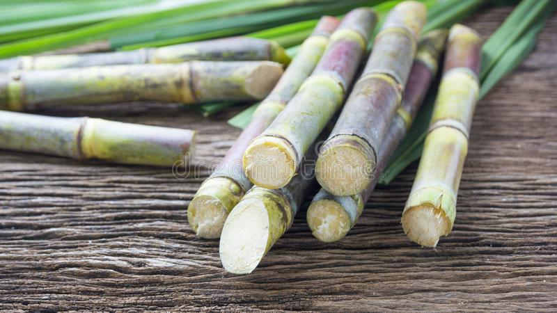
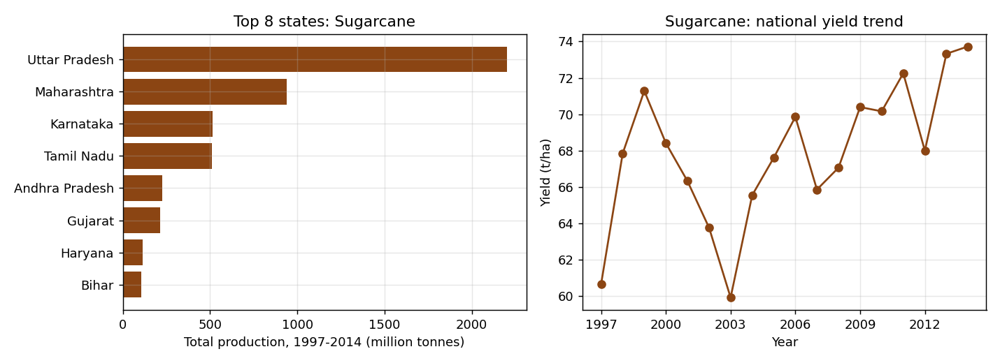

Sugarcane (or sugar cane) is a Genus of plants. There are between 6 and 37 types of sugarcane.Sugarcane grows in warm and tropical climates. It first grew in Asia, but after the year 700 people started planting it in Africa and southern Europe. Later it spread to the Americas and Australia. Today the biggest producer is Brazil in South America. India in Asia is second biggest producer after Brazil. Sugarcane stalks grow to between 2 and 6 meters tall. These stalks contain sugar, which is used to sweeten food and drinks. After the sugar has been taken out the remains of the stalks can be burned to generate heat and electricity. It can also be made into paper, cardboard and cutlery. This crop requires high temperature and high rainfall. In areas of low rainfall this crop is cultivated with the help of irrigation. Black soil or alluvial soil is the best for this crop. Sugarcane requires a large amount of water. That is why holding deep soil is required. As this crop absorbs nutrient matter from the soil, compost manure and chemical fertilizers are used. It wants 75-100cm rainfall. Sugarcane juice can be made by pressing the stalks in a machine. It is often sold in the streets in some countries. It can contain disease

States with more than 100,000 ha in total

Source: district-wise crop production data (data.gov.in via Kaggle), cleaned and analysed with SQL and Python.